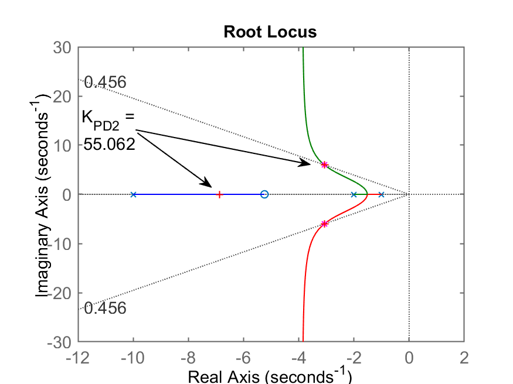
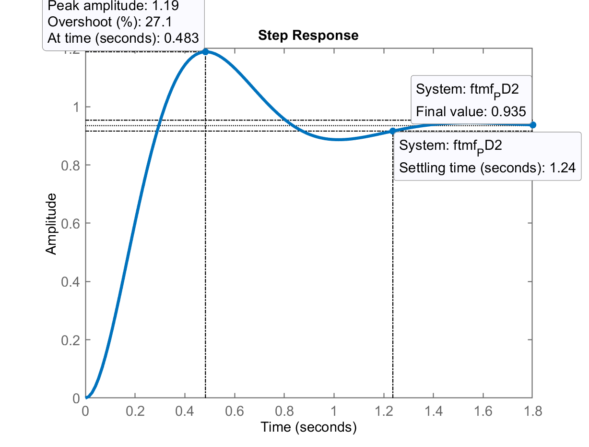
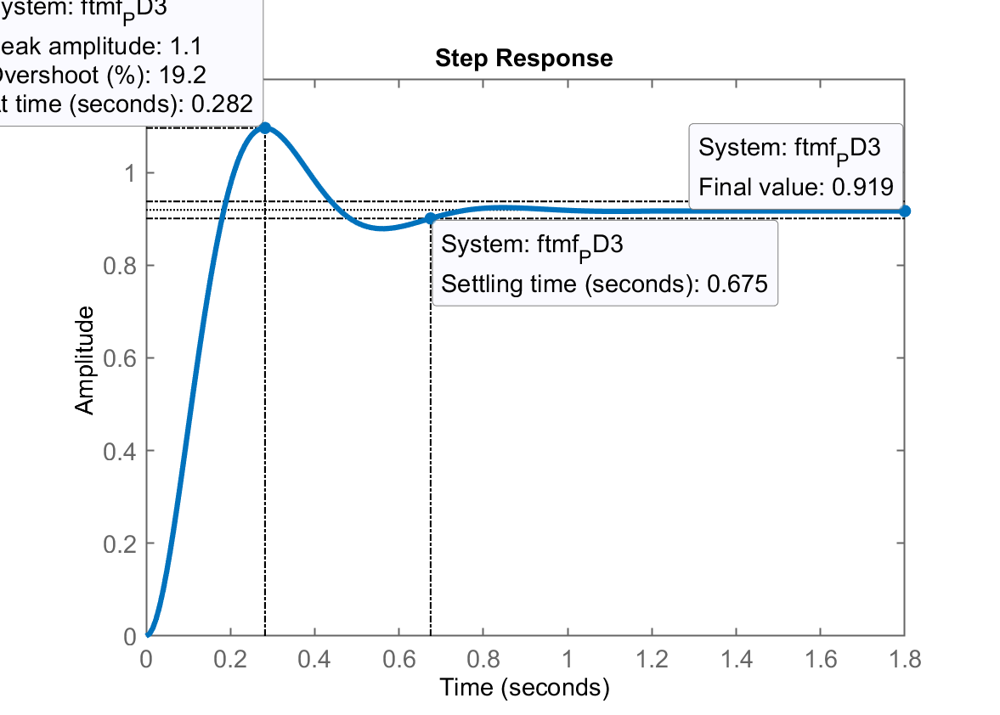
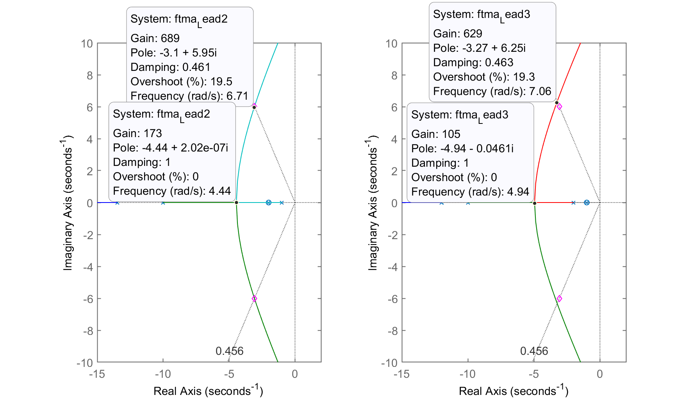

Photo by Marek Piwnicki on Unsplash
Photo by Marek Piwnicki on Unsplash
| Aula de: | 21/11/2022 |
|---|---|
| Tema: | Projeto de Controladores por Avanço de Fase (“Lead“) |
Recuperando dados da aula passada (Projeto de Controladores PD, aula de 07/11/2022)), arquivo dados.mat:
>> pwd
ans =
'C:\Users\fpassold\Documents\MATLAB\control2inf_2020_2'
>> % Recuperando dados da aula passada:
>> load dados
Sua equação genérica é:
onde
A questão continua sendo onde alocar o zero deste controlador. Já que o polo corresponde a frequência de corte de um filtro passa-baixas que deve estar localizado numa frequência superior ao polo mais rápido da planta (ou seja, no plano-s, este polo deveria estar próximo de
>> zpk(G) % confirmando a planta
ans =
1
------------------
(s+10) (s+2) (s+1)
percebemos que seu polo mais rápido está localizado em
Da aula passada (em 07/11/2022: Projeto de PD), quando foi realizado o projeto de controlador PD para esta planta, obtivemos os seguintes controladores:
| PD2 | PD3 | |
|---|---|---|
| Equação | ||
| 1,3 | 0,7 | |
| RL |  |  |
| Step |  |  |
| 19% | 10% | |
| 1,24 | 0,675 | |
| 0,935 | 0,919 | |
| 6,5% | 8,1% | |
| Conclusão | Mais adequado Menor valor máximo do sinal atuador, e menor erro. (Note valor do |
Possível Mas elevados valores de atuação, e erro maior. (Note valor do |
Notamos que para o PD2, seu zero foi alocado em
Mas… vamos reanalisar como fica (ou muda) o RL para este controlador em comparação ao PD.
Esboços rápidos de Root Locus, resultam em:
Analisando estes esboços podemos apostar em 2 posições para o zero deste controlador:
Lead1) com
Este local, gera um RL com ponto de partida para os polos complexos que provavelmente estará mais distante do eixo
Lead2) com
Neste caso particular, note que a complexidade final do sistema é reduzida. O Lead1 aumenta a complexidade da
Só nos resta explorar estas opções para confirmar qual renderia melhores resultados. Testando…
>> Lead1=tf(poly(-1.6),poly(-12))
Lead1 =
s + 1.6
-------
s + 12
>> Lead2=tf(poly(-2),poly(-12))
Lead2 =
s + 2
------
s + 12
>> % Comparando os RLs dos 2 Leads:
>> ftma_Lead1=G*Lead1;
>> ftma_Lead2=G*Lead2;
>> subplot(121); rlocus(ftma_Lead1);
>> hold on; sgrid(zeta,0)
>> % Lembrando posição desejada para polos de MF no caso
>> % de $t_s=1,3$ segundos e $\%OS=20\%$:
>> % em $s = -3.07692 \pm j 6.0061$.
>> % corresponde a variável `polos_MFd`
>> polos_MFd
polos_MFd =
-3.0769 - 6.0061i
-3.0769 + 6.0061i
>> plot(polos_MFd, 'md')
>> axis([-15 5 -10 10])
>> % Partindo para o outro RL
>> subplot(122); rlocus(ftma_Lead2)
>> hold on; sgrid(zeta,0);
>> plot(polos_MFd, 'md')
>> axis([-15 5 -10 10])
E assim obtemos:
Pela anális dos RLs obtidos, o segundo controlador (Lead2) deve render melhores resultados porque só conterá polos dominantes complexos, enquanto o Lead1, além do polos complexos, sofrerá a influência do polo de MF entre
Continuando o projeto do Lead2, e usando o script find_polo_zero.m para calcular onde deveríamos localizar o polo deste controlador para
>> C_aux=tf(poly(-2),1); % eq. do controlador sem o polo
>> ftma_aux=G*C_aux;
>> zpk(ftma_aux)
(s+2)
------------------
(s+10) (s+2) (s+1)
>> find_polo_zero
%OS (desired Overshoot, in %): ? 20
ts_d (desired settling time): ? 1.3
Desired MF poles in: s = -3.07692 \pm j 6.0061
Evaluating the pole(s) contribution angle(s):
Pole 1 in s= -10 --> angle: 40.9432^o
Pole 2 in s= -2 --> angle: 100.165^o
Pole 3 in s= -1 --> angle: 109.076^o
Sum of the angle(s) of pole(s):
$\sum \theta_{poles}=250.184^o$
Evaluating the zero(s) contribution angle(s):
Zero 1 in s=-2 --> angle: 100.165^o
Sum of the angle(s) of zero(s):
$\sum \theta_{zeros}=100.165^o$
Determining pole or zero location of the controller:
Select: [p]=pole or [z]=zero, for the controller ? p
Angle contribution required for controller: 487.865^o
The POLE of this controller must be at s = -13.4876
To continue the project, note that:
>> zpk(ftma) =
(s+2)
----------------------------
(s+13.49) (s+10) (s+2) (s+1)
Continuous-time zero/pole/gain model.
It is suggested to continue with the command:
>> K_ = rlocfind(ftma)
>> axis([-15 0 -2 7]) % realizando um "zoom" na região de interesse no gráfico da contrib angular.
O gráfico da contribuição angular resulta:
Descobrindo o ganho do Lead2…
>> axis([-15 2 -10 10]) % realizando zoom na região de interesse no RL do Lead2
>> K_Lead2=rlocfind(ftma)
Select a point in the graphics window
selected_point =
-3.096 + 6.0062i
K_Lead2 =
698.7
Segue o RL mostrando o ganho encontrado para o Lead2:
A equação final do Lead2 fica:
Fechando a malha e encontrando resposta ao degrau…
>> ftma_Lead2=ftma;
>> ftmf_Lead2=feedback(K_Lead2*ftma, 1);
>> figure; step(ftmf_Lead2)
Comparando com PD realizado antes para
>> zpk(PD2)
PD2 =
s + 5.241
>> K_PD2
K_PD2 =
55.062
>> ftma_PD2=PD2*G;
>> zpk(ftmf_PD2)
55.062 (s+5.241)
--------------------------------
(s+6.866) (s^2 + 6.134s + 44.95)
>> figure; step(ftmf_PD2, ftmf_Lead2)
>> legend('PD_21', 'Lead_2')
Pela figura nota-se que o erro do Lead2 é maior que o erro do PD2. Mas… o
>> K_Lead2
K_Lead2 =
698.7
>> K_lead2b=K_Lead2*1.1; % aumentando ganho em 10%
>> K_lead2b
K_lead2b =
768.57
>> ftmf_Lead2b=feedback(K_lead2b*ftma, 1);
>> figure; step(ftmf_PD2, ftmf_Lead2b)
>> % Não houve uma melhora tão significativa. Aumentando ainda mais o ganho...
>> K_lead2b=K_Lead2*1.2 % aumentando ganho em 20%
K_lead2b =
838.44
>> ftmf_Lead2b=feedback(K_lead2b*ftma, 1);
>> figure; step(ftmf_PD2, ftmf_Lead2b)
Comparando a resposta ao degrau do PD2 com o Lead2 com seu ganho aumentado em 20% (Lead2b):
Percebe-se que o
E se o zero do Lead ao invés de cancelar o segundo polo mais lento da planta (em
>> Lead3=tf(poly(-1),poly(-12))
Lead3 =
s + 1
------
s + 12
>> ftma_Lead3=Lead3*G;
>> subplot(121); rlocus(ftma_Lead2)
>> hold on; sgrid(zeta,0);
>> plot(polos_MFd, 'md')
>> axis([-15 2 -10 10])
>> subplot(122); rlocus(ftma_Lead3)
>> hold on; sgrid(zeta,0);
>> plot(polos_MFd, 'md')
>> axis([-15 2 -10 10])
Comparando RL do Lead2 com o Lead3:

Percebe-se pouca diferença. As partes reais dos pontos destacados nos 2 RLs mostram que no caso do Lead3 (RL da direita), estes polos estão mais afastados do eixo
Fechando a malha…
>> K_Lead3=630; % por inspeção do datatip no gráfico do RL
>> ftmf_Lead3=feedback(K_Lead3*ftma_Lead3, 1);
>> figure;
>> step(ftmf_Lead2b, ftmf_Lead3)
>> legend('Lead_{2(b)}', 'Lead_3')
Comparando resposta a entrada degrau entre Lead3 e Lead2, obtemos:
Obs.: Notamos pela resposta do Lead3, que ainda é possível aumentar seu ganho de forma a reduzir o
Mas com o que deveriámos nos preocupar no caso de projetos de controladores com ação derivativa (PD e Lead) ?
O que ainda não foi monitorado em aulas passadas, foram as amplitudes geradas pelos controladores, ou seja, as amplitudes das ações de controle,
Vamos perceber que controladores com ação derivativa geram amplitudes bastante elevadas, na prática saturando drivers de potência que atuam sobre um processo.
Comparando ações de controle do:
Não necessitamos repassar nossos controladores para um ambiente gráfico de simulação como o Simulink. Podemos “enganar” a função step() do Matlab para obter o gráfico de
>> aux_Kp = 100/(1+100*G)
aux_Kp =
100 s^3 + 1300 s^2 + 3200 s + 2000
----------------------------------
s^3 + 13 s^2 + 32 s + 120
>> zpk(C_PI1)
ans =
(s+0.8)
-------
s
>> aux_PI1 = (K_PI1*C_PI1)/(1+K_PI1*C_PI1*G)
aux_PI1 =
35.036 s (s+10) (s+2) (s+1) (s+0.8)
---------------------------------------------
s (s+10.41) (s+0.7348) (s^2 + 1.856s + 3.665)
>> aux_PD2 = (K_PD2*PD2)/(1+K_PD2*PD2*G);
>> step(aux_Kp) % sem erro, Ok
>> step(aux_PI1) % sem erro, Ok
>> step(aux_PD2)
Error using 'DynamicSystem/step',
Cannot simulate the time response of improper (non-causal)
models.
>> % Verificando o problema...
>> zpk(aux_PD2)
ans =
55.062 (s+10) (s+5.241) (s+2) (s+1)
-----------------------------------
(s+6.866) (s^2 + 6.134s + 44.95)
>> zpk(PD2)
ans =
(s+5.241)
O problema (no caso de aux_PD2) é que foi gerada (corretamente) uma transfer function onde o grau do numerador é maior que o grau do denominador. Se algebricamente realizarmos a transformada inversa de Laplace de uma função transferência deste tipo, vamos descobrir que necessitamos de amostras futuras do próprio sinal de saída da planta para resolver esta transformada, o que obviamente é impossível. Não temos como “prever” a amplitude futura de nenhum sinal. Então o Matlab, pela forma como internamente foi implementada a função step() não está tão incorreto assim.
O problema é: — há alguma forma de contornar este problema?
A solução consiste em acrescentar um pólo da equação do PD que está gerando o problema. Mas acrescentar este polo muito distante do pólo mais rápido da step() sobre aux_PD2 resulte em erro):
>> PD2b=tf(poly(-5.241),poly(-1000))
PD2b =
s + 5.241
---------
s + 1000
>> aux_PD2 = (K_PD2*PD2b)/(1+K_PD2*PD2b*G);
>> zpk(aux_PD2)
ans =
55.062 (s+1000) (s+10) (s+5.241) (s+2) (s+1)
--------------------------------------------
(s+1000)^2 (s+9.996) (s+1.977) (s+1.027)
>> % Note que agora o grau do numerador = grau do denominador
>> % Finalmente...
>> step(aux_Kp, aux_PI1, aux_PD2)
>> legend('Kp (K=100)', 'PI_1', 'PD_2')
>> title('Ações de Controle, u(t)')
E agora podemos finalmente comparar as amplitudes das ações de controle geradas por 3 controladores diferentes:
Ressaltando ação de controle do PD
>> aux_Lead2b = (K_lead2b*Lead2)/(1+K_lead2b*Lead2*G);
>> figure;
>> step(aux_PD2, aux_Lead2b)
>> legend('PD_2', 'Lead_{2(b)}')
>> title('Ações de Controle, u(t)')
Obs.: Repare no valor inicial de
>> K_lead2b
K_lead2b =
838.44
>> zpk(PD2b)
ans =
(s+5.241)
---------
(s+1000)
>> K_PD2
K_PD2 =
55.062
Fim, para esta tarde é tudo. Próxima aula está previsto o projeto de controlador PID e do controlador por Avanço-Atraso de Fase. Note que nesta “nova etapa”, estes 2 controladores elevam um pouco mais a ordem do sistema. Estes 2 controladores são de 2a-ordem, em comparação com os controladores anteriores estudados que são apenas de 1a-ordem. Isto implica mais incógnitas para resolver no projeto destes últimos 2 controladores…
Não esquecer de salvar dados para a próxima aula…
>> save dados
>> diary off